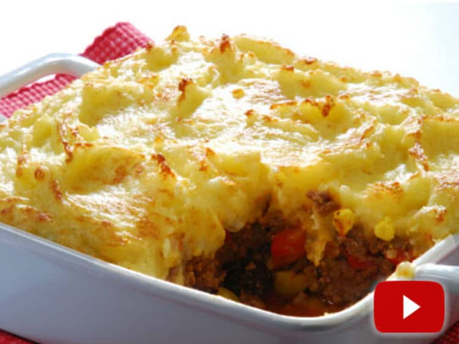

Pastel de papas
El favorito del General Perón

Ingredientes
- 1kg. de papas
- 1/2kg. de carne picada de ternera
- 1 cebolla
- 1/2 pimiento morrón
- 2 dientes de ajo
- 1 pastilla de caldo
- ajo en polvo
- pimentón
- 25g. de manteca
- 1 chorrito de leche
- nuez moscada
- aceite
- sal
- pimienta
Receta
- Cortar las papas en cubos y ponerlas a hervir con sal.
- Picar la cebolla, el ajo y el pimiento morrón.
- Calentar el aceite en una olla o sartén y sofreir la cebolla, el pimiento y los ajos.
- Cuando la cebolla está transparente, agregar la carne y sofreirla mientras se deshace con una cuchara.
- Salpimentar, agregar la pastilla de caldo, el ajo en polvo, el pimentón y cocer la carne 15min.
- Una vez que las patatas estén hervidas, hacer en caliente un puré con la manteca y la leche. Salpimentar.
- Poner en una fuente para horno una base de puré, agregar por encima la carne (dejar que se entibie un poco) y colocar otra capa de puré. Para distribuirlo, se moja la cuchara con agua fría.
- Llevar a horno fuerte o gratinador unos 15-20 min. o hasta que la parte de arriba esté crocante.
- Puede agregarse al relleno de carne un huevo picado, olivas verdes picadas o pasas de uva.